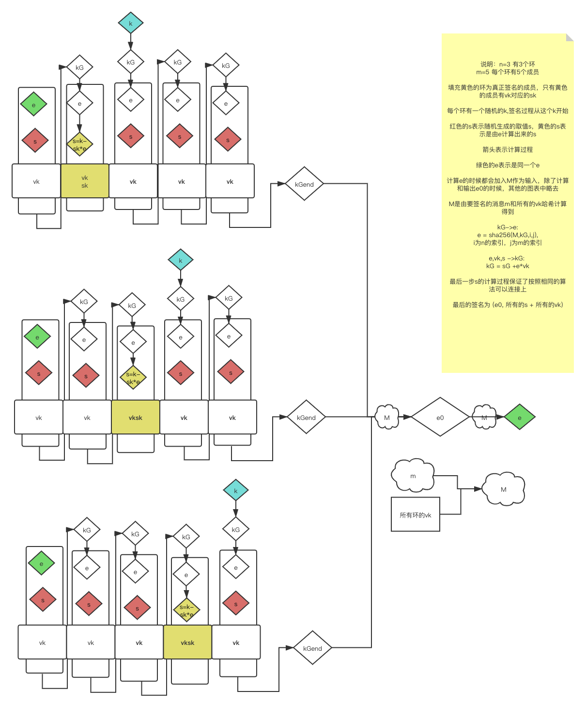
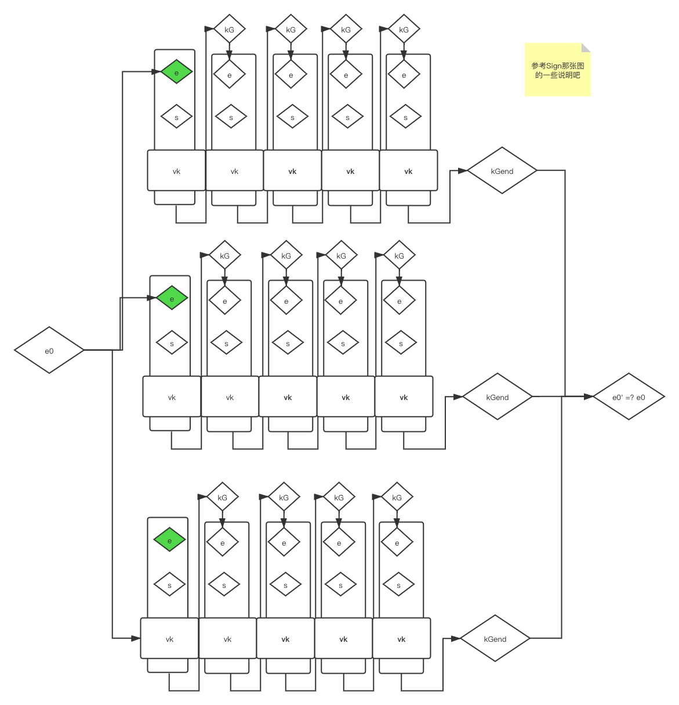

Borromean环形签名探究
最近在看grin的介绍，沿着Confidential Transaction了解到Borromean Ring Signature，对于该环形签名是如何设计的比较感兴趣， 阅读了论文和介绍CT的文章里也介绍了Borromean环形签名，对于其中一些步骤仍然有些模糊，之后研究了这篇文章作者写的一个python的示例（我看代码时添加了一些注释便于理解，可以参见这里）， 才明白了当中的设计。由于我也是初入门，哪里有理解错的地方，欢迎与我联系探讨。
下面是我梳理的整个的流程图，分为签名和验证两个部分:
签名

其中根据e,v,s计算kG的方法原文中如下:
def get_kG(e, P, s=None): '''Use EC operation: kG = sG +eP. If s (signature) is not provided, it is generated randomly and returned. e - hash value, 32 bytes binary P - verification pubkey s - 32 bytes binary''' if not s: s = os.urandom(32) #随机生成s sG = btc.fast_multiply(btc.G, btc.decode(s, 256)) # s*G eP = btc.fast_multiply(P, btc.decode(e, 256)) # e*P return (btc.fast_add(sG, eP), s) # return kG = sG +eP, And random s
根据kG计算e的方法如下，其中参数pubkey为kG,m为M,i是n个ring里的索引，j是ring里的位置索引：
def borr_hash(m, pubkey, i, j, is_pubkey=True): '''A Sha256 hash of data in the standard 'borromean' format. Note that 'pubkey' is the value kG as according to kG = sG - eP. i,j : the indices to a specific vertex in the graph. m - the message to be hashed. Returns - the hash. ''' # little hack assuming sizes < 256 p = btc.encode_pubkey(pubkey, 'bin_compressed') if is_pubkey else pubkey x = p + m + '\x00' * 3 + chr(i) + '\x00' * 3 + chr(j) return sha256(x).digest()
根据要签名的消息m计算M的方法如下，其中vks是所有ring的公钥：
# 这里对应于论文里的 "Compute M as the hash of the message to be signed and the set of verification keys." def get_sig_message(m, vks): '''The full message is a sha256 hash of the message string concatenated with the compressed binary format of all of the verification keys.''' full_message = m for loop in vks: for p in vks[loop]: full_message += btc.encode_pubkey(p, 'bin_compressed') return sha256(full_message).digest()
由所有kGend一起计算出e0的方法如下：
to_be_hashed = btc.encode_pubkey(kGend, 'bin_compressed') + ... + M # 所有的kGend相加再加上M e0 = sha256(to_be_hashed).digest() # e0 是 每个ring最后一个计算出来的kG加上M计算出来: sha256( kG+kG+...+kG +M)
由e0演算出绿色的e(也就是每个ring第一个e)的方法如下:
e[i][0] = borr_hash(M, e0, i, 0, is_pubkey=False)
验证
验证相比于签名要简单写，从第一个位置开始，根据签名里的e0开始演算，知道最后将所有ring的结果综合起来计算，和e0相比是否相等：
